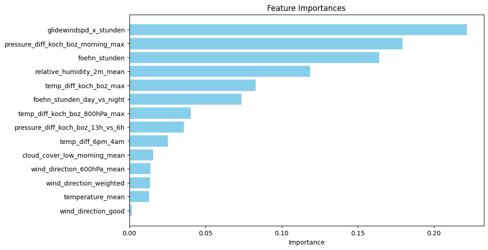

Das Modell wurde trainiert auf historischen Wetterprognosen zwischen November 2022 und Dezember 2024, die über die API von Open-Meteo.com bezogen wurden.
Nach dem Training erreicht das Modell auf "ungesehenen" Daten eine Präzision von ca. 80 % und einen Recall von ca. 50 %. Das heißt, an 80 % der vorhergesagten Föhntage herrscht tatsächlich Föhn am Kochelsee, und ca. die Hälfte aller Tage, an denen tatsächlich Föhn herrscht, wird auch vorhergesagt. Das wird in der Confusion Matrix unten für einen Zeitraum von 234 Tagen verdeutlicht. Dort erhalten Tage mit hoher Föhnwahrscheinlichkeit (> 75 %) das Predicted Label 1, und Tage, an denen tatsächlich Föhn war, das True Label 1.

Das zugrunde liegende Modell ist ein Random Forest-Classifier, basierend auf scikit-learn, der 14 Merkmale zur Vorhersage verwendet und aus ca. 100 Entscheidungsbäumen besteht. Zur Illustration sind die Namen dieser Merkmale unten zusammen mit ihrer Wichtigkeit dargestellt. Besonders hilfreiche Merkmale sind die im AROME-Wettermodell vorhergesagte Windgeschwindigkeit multipliziert mit der Dauer, die Druckdifferenz zwischen Kochel und Bozen sowie die vorhergesagte Luftfeuchtigkeit. Falls jemand weitere gute Ideen hat, welche Größen die Vorhersage noch verbessern könnten, gerne Bescheid geben! :) Die Temperaturdifferenz zwischen Kochel und Bozen bei 800 hPa (ca. 2000 m Höhe) habe ich z. B. berücksichtigt, da sie hier als wichtiger Treiber für Föhnwinde erwähnt wird.
Christian Fey
kochelmann@posteo.net